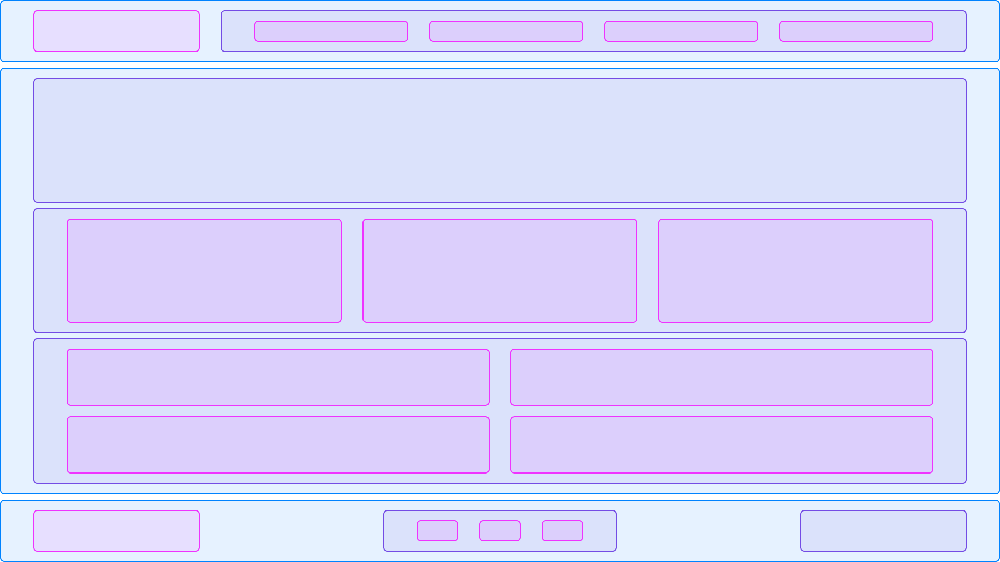

/ Наш мини блог на тему WEB разработки
Стоит ли делать слайдеры на CSS
Слайдер — блок на странице, в пределах которого пользователю показывают статьи, новости, изображения или другой контент с определённой периодичностью. Например, когда на сайте вам показывают друг за другом несколько баннеров с акциями. Давайте разберёмся, как стоит их делать.
Когда разработчикам становится скучно, они начинают придумывать себе задачи, которые редко похожи на реальные рабочие, но бывают и исключения. Верстальщик, не знающий дополнительных технологий, начинает решать задачу так, как умеет.
С одной стороны, это замечательно, но только когда верстальщик пытается глубже понять уже знакомые технологии. Ну и просто just for fun. Куда же хуже, когда решается реальная задача.
Никогда не делайте слайдеры на реальных проектах с помощью CSS.
Да, вы это можете сделать, но посмотрите, как много минусов вы получите, попросту говоря, выстрелите себе в колено.
- Чтобы добавить новый слайд, нужно дописать ещё немного CSS-стилей. Каждое изменение количества слайдов влечёт за собой изменение стилей.
- Сделать некоторые дополнительные задачи становится невозможно, например, бесконечную прокрутку.
- HTML-разметка сделана только для того, чтобы CSS начал работать, а не от логики построения контента. Например, радиокнопки, которые будут переключать слайды, необходимо поместить в начало разметки, а визуально они будут находиться в другом месте.
Из этого следует правило: пишите логику с помощью языка программирования, например, JavaScript. И это касается не только слайдеров, но и табов, попапов. Разделяйте ответственность правильно.
Как измерить время написания кода
Чтобы понять, сколько часов уходит на выполнение конкретных задач или проекта в целом, разработчики используют тайм-трекеры. Тайм-трекеры помогают контролировать личный прогресс. Например, сколько времени разработчик делал разметку двух аналогичных страниц полгода назад и сегодня. Наблюдения дают понять, какие навыки он прокачивает, а где буксует.
Какими тайм-трекерами пользоваться
Конечно, неплохие таймеры есть в современных телефонах и наручных часах. Но любое из этих устройств может неожиданно разрядиться или вообще остаться дома. Трекер лучше иметь прямо на компьютере, неважно, в браузере или на рабочем столе.
Например, люди при выполнении практических заданий прибегают к Toggl. Можно скачать приложение или установить расширение и пользоваться этим инструментом прямо в браузере. Когда человек садится за работу, он вводит задачу в Toggl и включает таймер, а если делает перерыв — приостанавливает его. Так студент может отслеживать свой прогресс.
В трекерах встречается функция автоматического старта или остановки таймера. Это на случай, если человек точно знает, что будет работать ровно с 16:00 до 18:00 и ни минутой больше. Для страховки можно также включить напоминания, например, в TMetric и Toggl.
Кроме того, у специальных инструментов, таких как Everhour или Harvest, часто есть и другие функции: календарь, система управления проектами, конструктор отчётов, командное взаимодействие. Они созданы специально для оптимизации проектной работы и позволяют выполнять разные задачи в одном приложении.
Что делать, если забыл включить или выключить таймер
Даже если разработчик настроил напоминания о включении таймера, что-то может пойти не так. Например, он не заметил предупреждение и забыл нажать кнопку старта. В таком случае ему нужно просто посчитать по обычным часам, сколько он примерно проработал.
Может случиться и так, что у человека изменился график или цели работы, а он не обновил настройки трекера: скажем, не изменил время автоматического старта. Тогда тоже придётся обойтись обычными часами и просто перенастроить параметры трекера. Главное не затягивать — иначе общее время работы сильно исказится.
Кстати, когда работает несколько таймеров — на отдельные задачи и на проект в целом — нужно проверять каждый. Потому что если с одним из таймеров случились перебои, надо убедиться, не отразилось ли это на других.
Почему первичная оценка может не совпасть с реальностью
Разработчик иногда пишет код дольше, чем предполагалось. Это бывает, если ему приходится долго разбираться в каком-то подходе — особенно если это джун — или он экспериментирует и прорабатывает несколько вариантов решения задачи. А ещё он банально может застрять на баге или опечатке.
К тому же заказчик иногда вносит коррективы в проект прямо в ходе рабочего процесса. И, например, готовые четыре слайда синего цвета приходится менять на восемь красных. Обычно сразу понятно, сколько часов займут эти правки. Но если новая задача сложная, не всегда ясно, когда она будет решена и может ли быть реализована вообще.
Поэтому чтобы обойтись без просрочек, при начальной оценке времени работы над кодом лучше заложить время и на непредвиденные трудности.
Итак, тайм-трекер — полезный инструмент для измерения времени работы и фиксирования личных показателей. Он позволяет понять, какие задачи разработчик выполняет быстро, а какие медленно. Из этих данных можно сделать вывод, где возникают проблемы и какие навыки нужно подтянуть. А ещё использование тайм-трекера даёт более точное понимание, сколько часов нужно закладывать на выполнение конкретной задачи.
Когда использовать флексы, а когда гриды
Сеткой или раскладкой обычно называют взаимное расположение крупных визуальных блоков на странице.
Можно мысленно разделить макет на не пересекающиеся друг с другом прямоугольники. Сначала вы получите самые крупные области, потом эти крупные области можно разделить на области поменьше, и так далее до мельчайших прямоугольников, которые выделяют отдельные слова или элементы страницы. Вся страница будет выглядеть как набор вложенных в друг друга прямоугольников, от самых крупных до самых мелких.
 Сетка страницы от крупных до мелких прямоугольниковИстория
Не все верстальщики учились строить сетки веб-интерфейсов сразу на гридах. Некоторые начали верстать тогда, когда специальных инструментов для построения сеток ещё не было и приходилось использовать таблицы или флоаты, хотя их придумали для изъятия элементов из потока. Но когда в 2006 году появилась технология, предназначенная именно для построения сеток, — CSS Flex Layout (флексы) — таблицы и флоаты с этой целью постепенно перестали применять.
На тот момент выбор верстальщиков в пользу флексов был очевиден. Но с появлением в 2011 году ещё одного инструмента — CSS Grid Layout (гридов) — развернулся спор, который до сих пор продолжается. Верстальщики разделились на две категории: одни — за флексы, вторые — за гриды. И те, и другие пытаются обосновать свою позицию и убедить коллег в том, что правы именно они.
Сходства и различия
Масло в огонь подливает то, что гридами и флексами можно решать одни и те же задачи. Например, сделать стики-футер (когда подвал сайта прилипает к нижней части экрана), случайное количество карточек товара или каркас всей страницы.
Одно из преимуществ гридов — зазоры между линиями (gap), но и они перешли уже в общую спецификацию. Теперь gap можно использовать во флексах, что ещё больше добавляет путаницу в выборе CSS-свойства.
Но тем не менее между флексами и гридами есть значимые различия.
Флексы — одномерные. Это значит, что управлять расположением в рядах нельзя.
Пример сетки на флексахГриды же двухмерные. То есть можно передвигать элементы между строками и рядами.
Пример сетки на гридахНапример, если верстальщик хочет расположить логотип, навигацию и номер телефона в шапке, то проще будет использовать флексы. Именно проще: гриды тоже могут решить эту задачу, но флексы справятся с ней гораздо быстрее.
Если взять целый сайт, с шапкой, контентной частью и подвалом, то здесь речь будет идти уже о двухмерности интерфейса. И хотя флексами сайт тоже можно сверстать, гриды сделают это эффективнее и надёжнее.
Таким образом, гриды в основном используются для построения сетки всего интерфейса. Флексы же — для расположения элементов внутри сетки.
Гриды — для каркаса сайта, флексы — для контента.
Мы рекомендуем придерживаться именно такого порядка. А по мере работы с этими двумя свойствами вы и сами начнёте чувствовать, в каких случаях та или иная технология подходит больше.